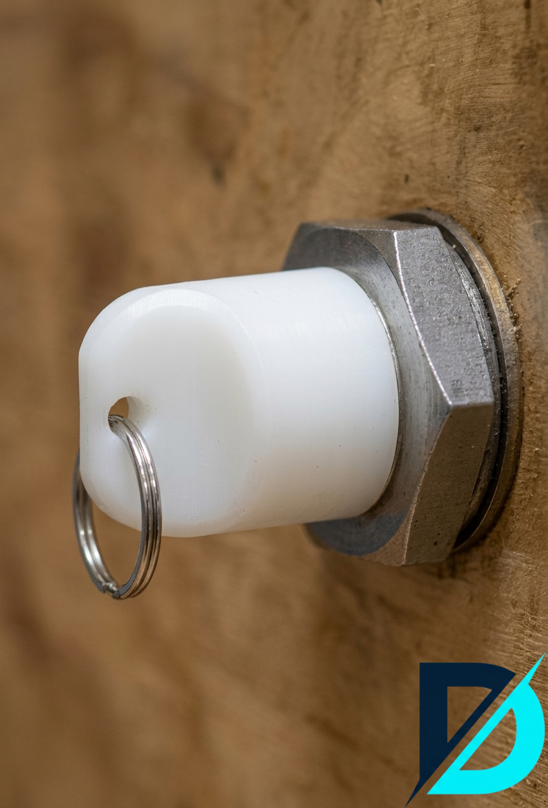

Projecten: Ontwerp naar Realiteit
Industriële Behuizing
Geproduceerd in ESD-veilig materiaal voor elektronica-toepassingen. Links ziet u het CAD-model, rechts het geprinte onderdeel.
Materiaal: ABS-ESD
Bekijk Ontwerp
Geproduceerd in ESD-veilig materiaal voor elektronica-toepassingen. Links ziet u het CAD-model, rechts het geprinte onderdeel.
Materiaal: ABS-ESD
Bekijk Ontwerp